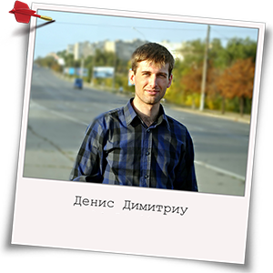

Резюме
Меня зовут Денис Димитриу, моя цель - стать фронт-енд разработчиком.
Знание языков:
русский - свободное владение, українська - вільне володіння, english -
intermediate;
Знание вэб-технологий:
HTML, СSS, CMS WordPress
Знание языков программирования:
RISC Assembler, С, С++, JavaScript, JQuery, PHP;
Знание программ:
IDE NetBeans, PHPStorm, Photoshop, Sublime Text, FireBug, Chrome Dev Tools;
Образование:
высшее техническое;
Водительские права:
категория В;
Личные качества:
ответственность, порядочность, умение работать в команде, нацеленность на
результат, коммуникабельность, обучаемость, трудолюбие, стремление к развитию и росту.
Знания
На данный момент обладаю знаниями HTML, CSS на уровне кроссбраузерной валидной верстки веб-страниц, лендингов, шаблонов сайтов по макетам psd. Умею применять сетку Bootstrap для построения адаптивной разметки. Имею навыки добавления интерактивного поведения элементам страниц с помощью JavaScript, JQuery (вложенные меню, слайдеры, модальные окна, валидация форм, анимация при скролле и т.д.). Могу реализовать взаимодействие страницы с сервером без перезагрузки по технологии AJAX. Так же умею интегрировать дизайн сайта в CMS WordPress. Обладаю знаниями основ PHP, СУБД MySQL. Умею работать в системе контроля версий GitHub. Придерживаюсь принципов прогрессивного улучшения в процессе разработки

В последнее время активно интересуюсь сферой веб-разработки. Прошел подготовительные курсы по тестированию программного обеспечения и веб-приложений от компании QATestLab. Имею представление об этапах разработки и жизненном цикле программных продуктов. Понимаю принципы командной работы в IT-компании.
В перспективе планирую изучить работу с препроцессорами SASS, LESS, разработку сайтов на основе фреймворка Angular JS
Инструменты
В качестве основного инструмента разработки я использую IDE PhpStorm, активно применяю возможности плагина Emmet для ускорения верстки, использую встроенный дебагер для отладки кода, а таже плагин к бразеру Chrome Jetbrain IDE support, который позволяет мгновенно отобразить результаты работы в браузере. Так же использую инструменты разработчика в браузерах: FireBug для FireFox, Dev Tools для Chrome
В качестве легкого редактора с подсветкой синтаксиса я использую Sublime Text 3. Для верстки страниц с наибольшим приближением к оригиналу применяю плагин браузера Perfect Pixel.
Для работы с макетами формата psd использую Adobe Photoshop CC, а для ускорения процесса верстки применяю программу Avocode
В качестве локального сервера я использую серверные платформы OpenServer или XAMPP.
Контакты
Контактный телефон: +38 067 261 5117
E-mail: denis.dimitriy@gmail.com
Facebook: https://www.facebook.com/d.i.dimedrol
VK: https://vk.com/denisdimitriu
Skype: denis.dimitriy@gmail.com